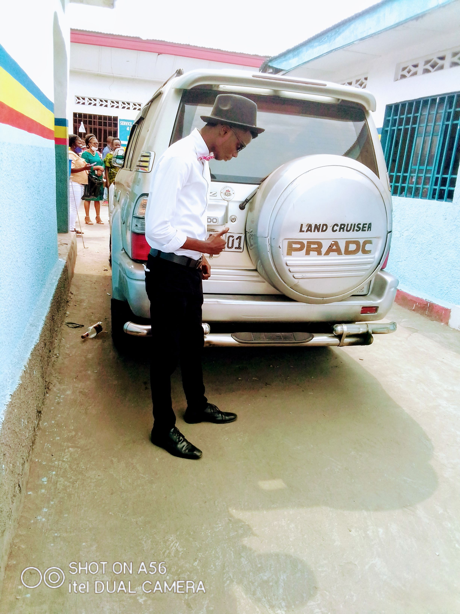
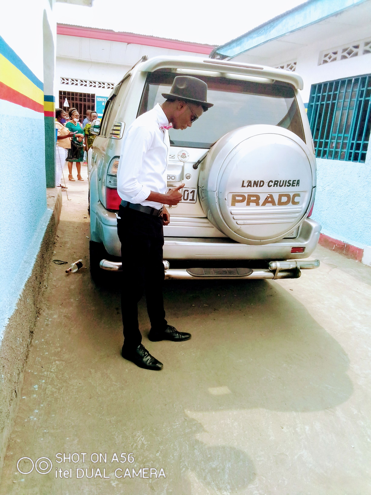

parcours de ma vie quotidienne
je m'appelle oyema shungu gédéon de nationalité congolaise né à kinshasa dans la province de sankuru
secteur ukulungu dans un territoire de katako-kombe fils de joseph AKENDE et de la mère EMMA cecile,
mon père fut un ingénieur de batiment et ma mère une commerçante.
Quand j'étais encore trop petit j'aimais beaucop des animaux,des belles fleurs,des arbres tous comme
créatures crées par DIEU jéhovah je pensais à lui parceque dans sa faveur que je suis né et je suis en vie.
parcours de ma vie scolaire
Dans ma vie solaire, j'étais scolarisé à l'âge de 5ans à cette âge les études c'était déjà à deuxième place de ma vie.
voici mes parcours scolaires de ma vie:
- 2011-2012 obtention du certicat à l'école primaire
- 2017-2018 obtention de diplome d'Etat option pédagogique
- 2018-2019 enseignant à l'école primaire et sécondaire
Langues parlées:
- Français
- lingala
parcours de ma vie quotidienne
Quand je failli finir mes études humanitaires à cette belle année j'étais heureux et je remercier mes parents de tout ce qu'ils ont
fait pour moi surtout du coté financier et je remercier aussi DIEU de tout son soutient surtout la souffle de vie,je me suis décidé d'aller
faire les universités pour apprendre aussi tant de connaissance pour pouvoir organiser ma vie quotidienne mais mon soucie c'était de faire l'informatique mais
mon père a décidé pour moi de faire le droit malgré je n'étais pas convaincu de cette proposition pour pouvoir rendre mon père heureux j'ai accepté et ma prémiere année à l'université de kinshasa
à la faculté de droit je fais 6mois dans cette faculté ça tient pas mieux pour moi parceque c'est n'était pas mon choix préféré et j'ai pris le courage de causer avec mon père pour lui informer que je n'aimes pas cette faculté malgré mon père à vraiment faché mais ce qui est bien il avait accepté
que je puisse faire l'informatique comme mon choix de ma vie et mon rêve et la deuxième année j'étais à la faculté de science et département mathématique statistique et informatique,et j'étais convaincu jusqu'aujourd'hui je me suis allé à la faculté de science pour étudier l'informatique approfondie si tout va Bien
j'aimerais imiter tous mes professeurs de mon département sans oublier mon bon professeur JEAN DJUNGU je vous aimes vraiment tous que DIEU vous benisse et j'ai laisser ma vie dans la main de jéhovah.

 
